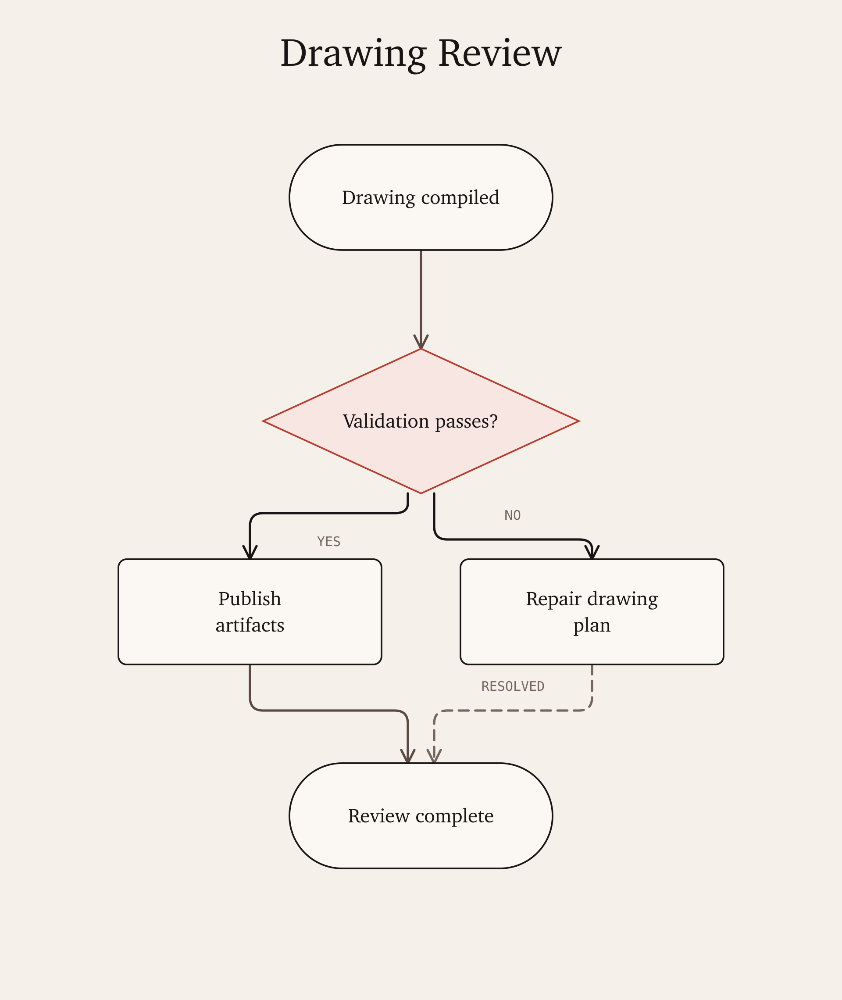

Drawing DSL
Drawing Review Flow

A typed Flowchart artifact with decisions, branch labels, orthogonal routing, accessible SVG metadata, and deterministic validation.
Drawing DSL

A typed Flowchart artifact with decisions, branch labels, orthogonal routing, accessible SVG metadata, and deterministic validation.